Se realizará el ejemplo del uso del R, utilizando una base de datos externa. En esta caso una base de datos en donde se registra por grupo de edad y género el número de homicidios en Colombia durante el 2014.
Inicialmente se toma el archivo en formato .xlsx o .xls y se ubica en una carpeta nueva. La premisa es que se debe ubicar la base de datos en el mismo lugar en donde se grabará el guión o código de R.
En este caso se creó una carpeta con el nombre de practica1. Y
en ese lugar se ubicó el archivo HomicidiosColombia.xlsx, como se muestra a continuación:
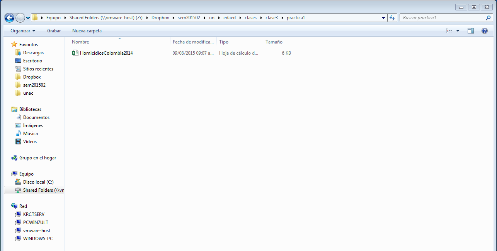
Seguidamente se abre en Excel como se muestra en la siguiente imagen:
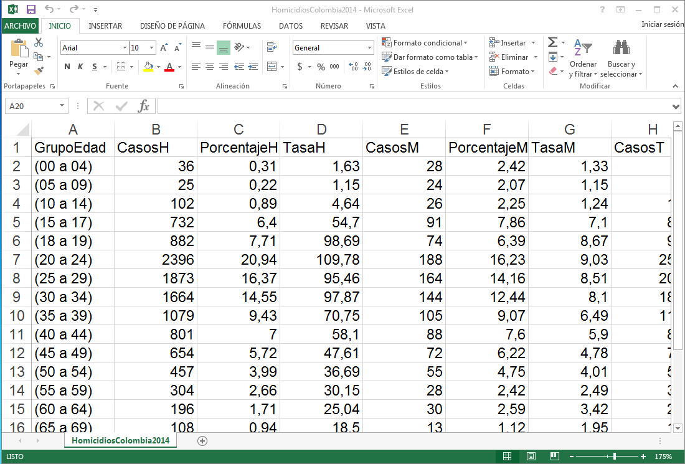
Se debe guardar con el formato .csv siguiendo la ruta de guardar como ... en la misma carpeta en donde está el archivo .xlsx y seleccionando la opción de CSV (delimitado por comas) , como se muestra a continuación:
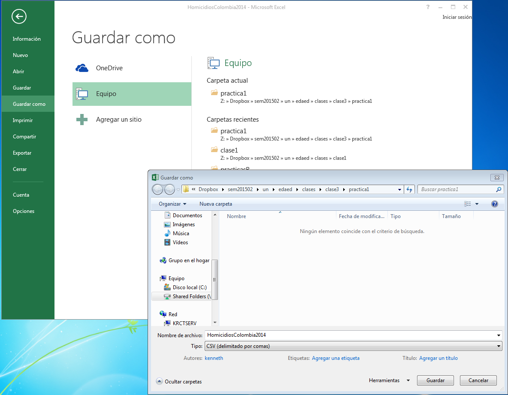
En la carpeta deberán entonces mostrarse dos archivos, uno con formato .xlsxy otra con formato .csv como se muestra en la siguiente imagen. Note que ahora existe dos archivos con el mismo nombre pero tienen diferente icono (el uno representa el formato .xlsx y el otro .csv).
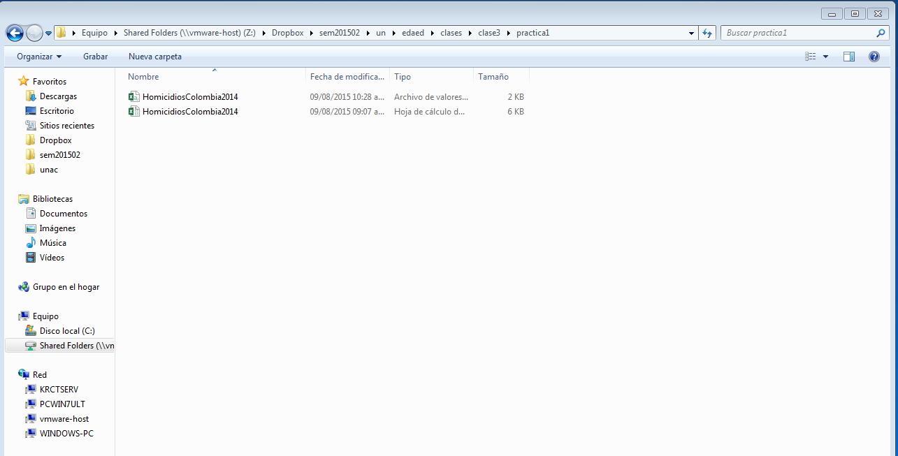
Para verificar el formato en el cual está codificado el archivo .csv se abre con el programa bloc de notas y se debe mostrar como la siguiente imagen:
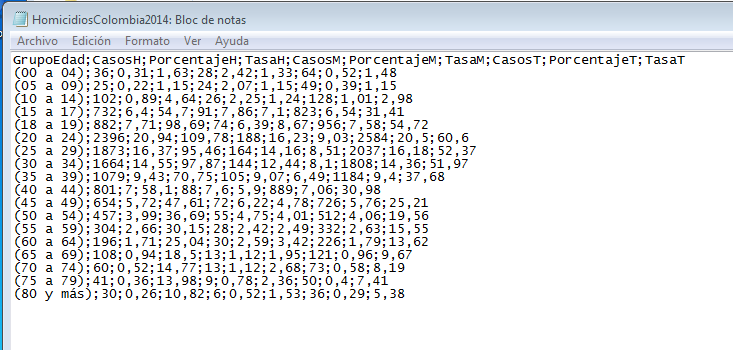
Note que los campos están separado por un punto y coma (;) y los puntos decimales se identifican por coma (,) (Este formato es el usual para la configuración latinoamericana). Si el archivo tiene un formato diferente, es decir los campos están separados por coma (,) y los puntos decimales se identifican por punto (.) entonces se deberá tener en cuenta a la hora de leer en R la base de datos (este formato se configura como un formato aglosajón), debido a que se requiere un cambio en el comando de lectura.
Ya se por un enlace directo en el escritorio o por el menú de programas se puede iniciar el programa RStudio.
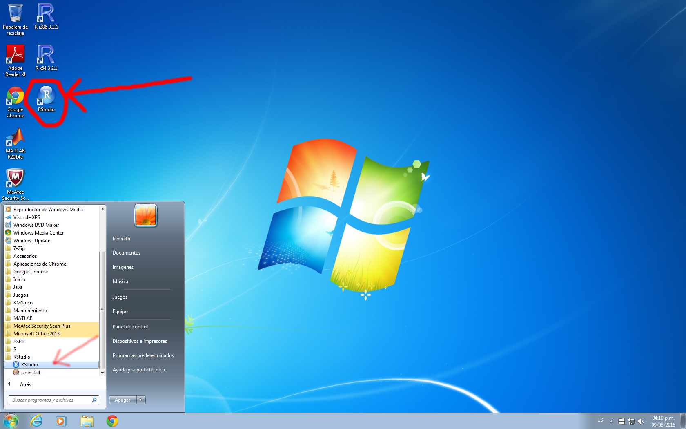
Aparece la pantalla del R studio.
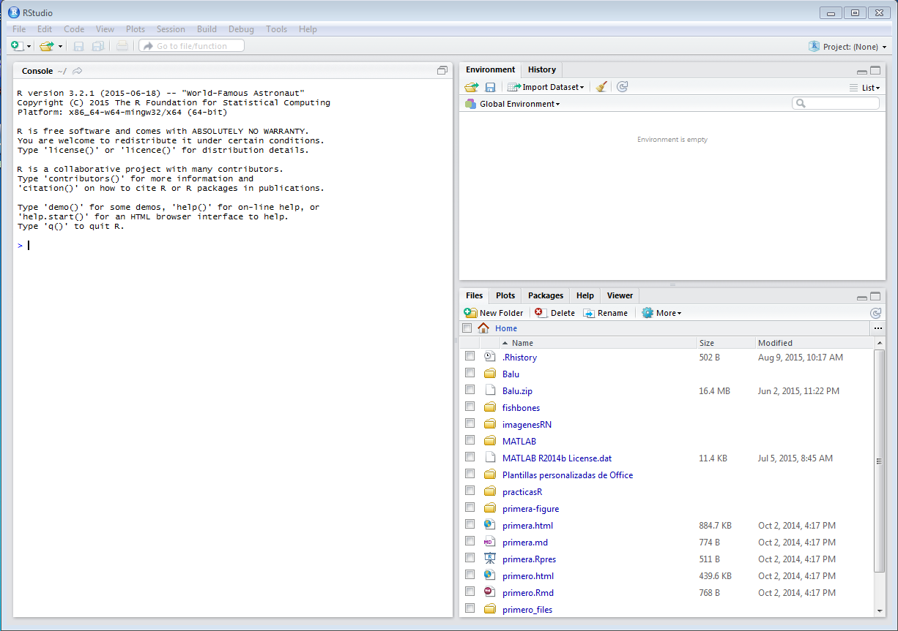
Para crear un nuevo guión o script se sigue la ruta File > New File > R Script
Y ahora la apariencia es la siguiente:
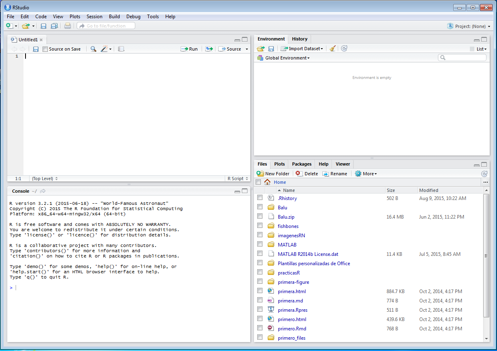
A continuación se sigue la ruta File > Save as y se graba con un nombre como guion_homicidios_Colombia en el mismo lugar en donde se encuentran ubicadas las bases de datos. Así como se muestra a continuación:
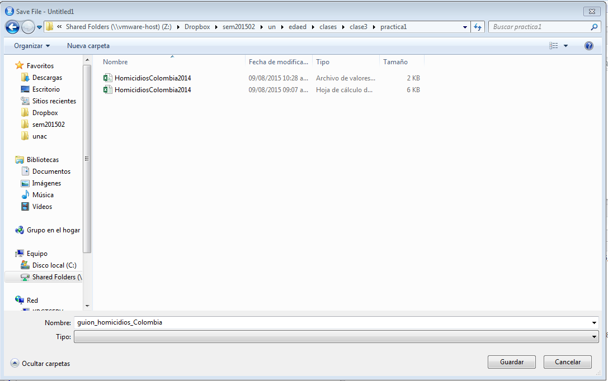
Entonces ahora la interfaz RStudio deberá quedar de la siguiente manera:
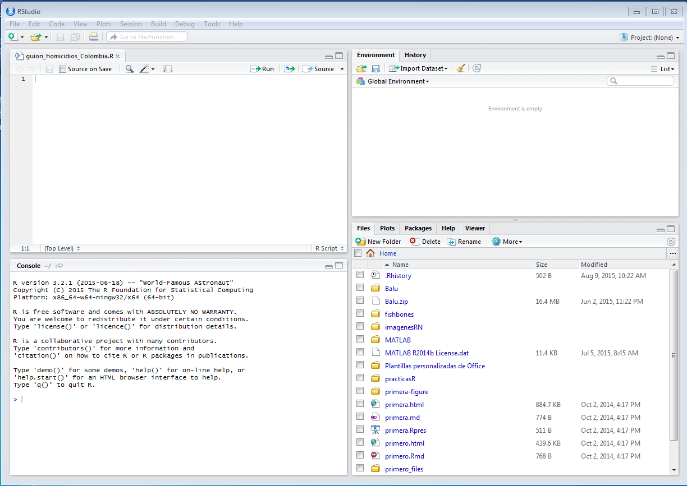
En la ventana de console de digita el siguiente comando dir() y luego la tecla enter y se mostrarán algunos nombres de archivos. En este caso no aparecen los nombres de los archivos de las bases de datos que se quieren leer.
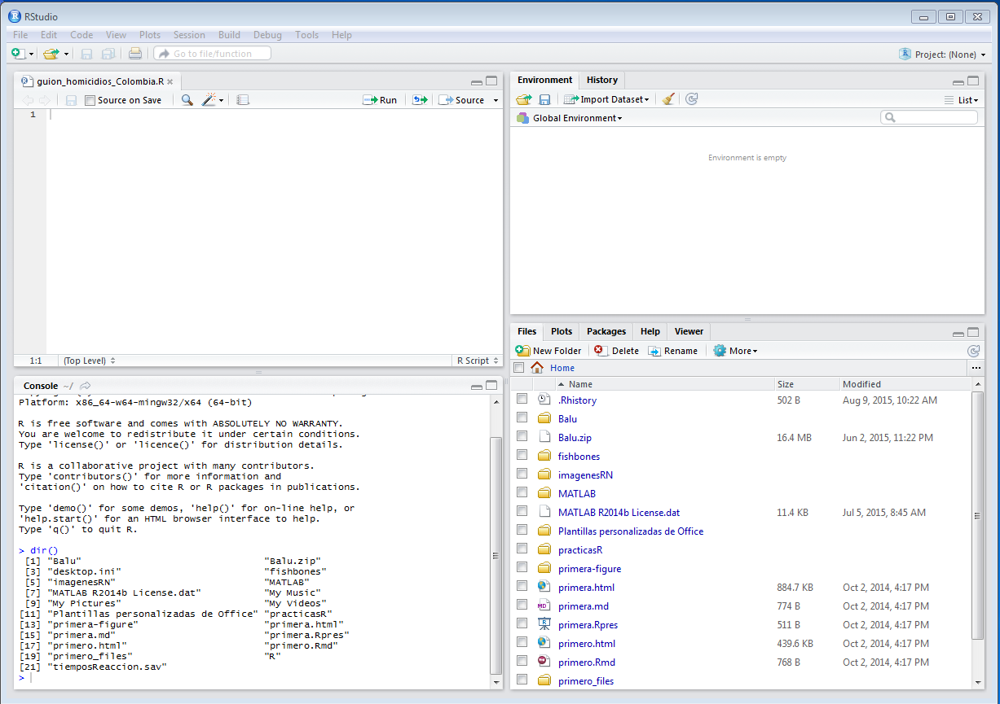
Se sigue la siguiente ruta para cambiar de carpeta o directorio de trabajo: Session > Set Working Directory > To Source File Location y se deberá mostar algo similar a la siguiente imagen:
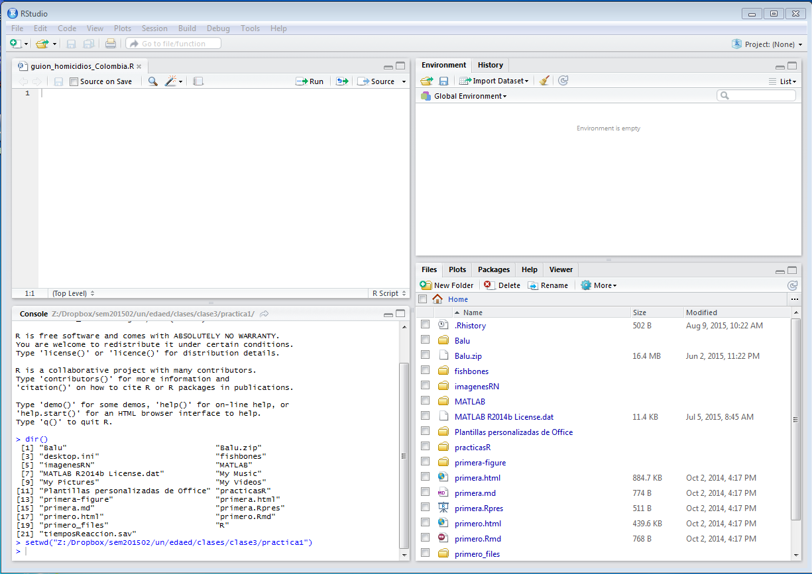
De nuevo se digita en la consola el comando o instrucción dir() y ahora aparecerán los nombres de los archivos de las bases de datos, junto con el nombre del script como se muestra a continuación:
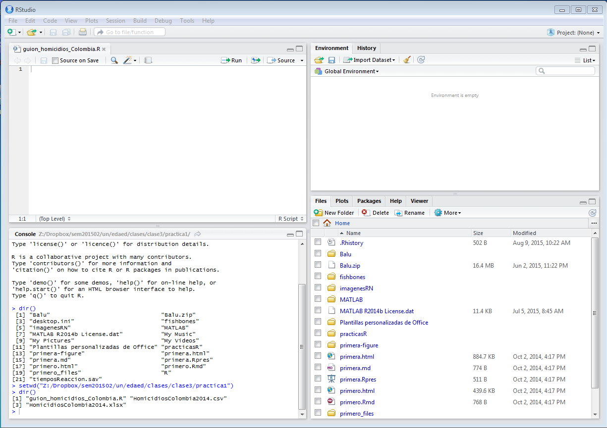
En la ventana del guión o script se escribe el siguiente código:
# Lectura de la base de datos de homicidios en Colombia en el 2014
homCol <- read.csv2("HomicidiosColombia2014.csv")
# Muestra la base de datos de homicidios en Colombia en el 2014
homColNota: En el caso de que el formato sea el anglosajón en lugar de read.csv2() se utiliza la función read.csv().
Para ejecutar el código se ubica en cada renglón y se presiona Ctrl-Enter y así cada línea se ejecutará una a una repitiendo la teclas Ctrl-Enter.
Para ejecutar todo el código se presiona las tecla Ctrl-Alt-R.
El resultado de la ejecución del código es:
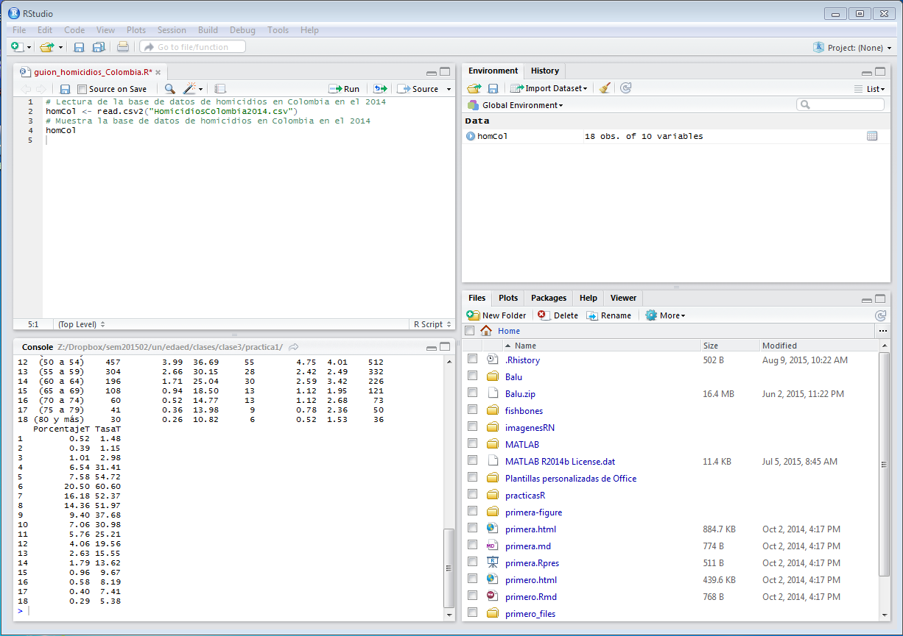
Para realizar otras actividades, ya sean de cálcuo o gráficas se añade el código correspondiente como se muestra a continuación:
No olvidar grabar frecuentemente el código para no perder las acciones realizadas.
# Cálculo de estadísticos de tasa de homicidios totales
with(homCol, summary(TasaT)
# Gráfica sencilla con las tasas de homicidios totales por grupo de edad
with(homCol, barplot(TasaT)El resultado final se muestra en la siguiente imagen:
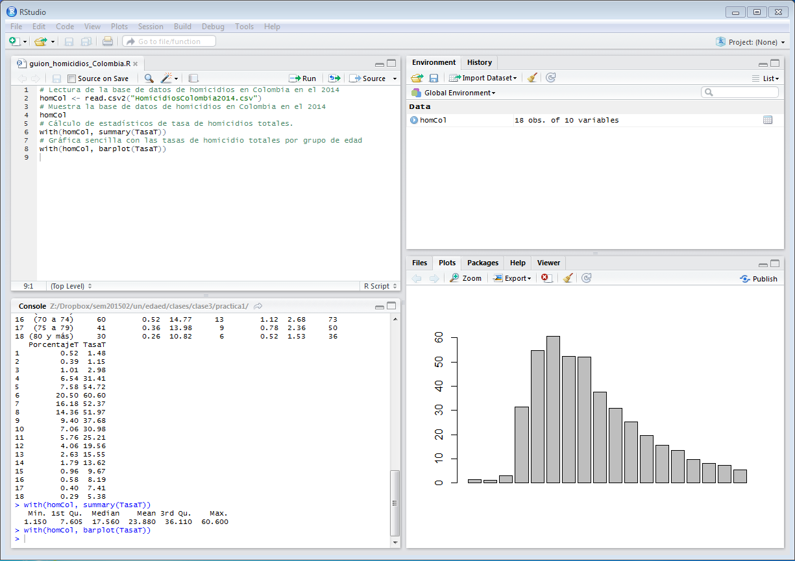
Si se desea terminar la sesión se procede a cerrar el programa el cual mostrará una pantalla como la siguiente:
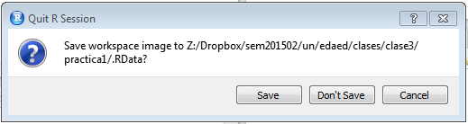
En este caso se elige la opción Save para guardar el espacio de trabajo o workspace.